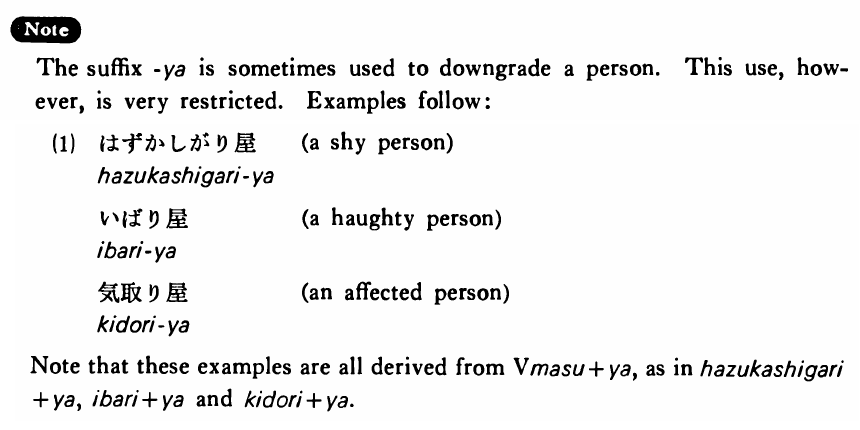

屋・や (B. 535)
- (a).
- 花屋 本屋 薬屋 肉屋 パチンコ屋 パン屋 魚屋 酒屋
- Florist bookstore drug store butcher pinball parlor bakery fishmonger liquor store
- (b).
- 酒屋さんに電話してビールを三ダース持って来てもらった。
- I called the man at the liquor store and had him bring me three dozen beers.
- (c).
- あの人は政治家ではなくて政治屋だ。
- He is not a statesman but a mere politician.
